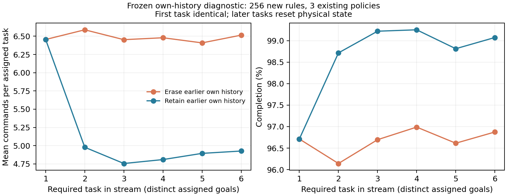
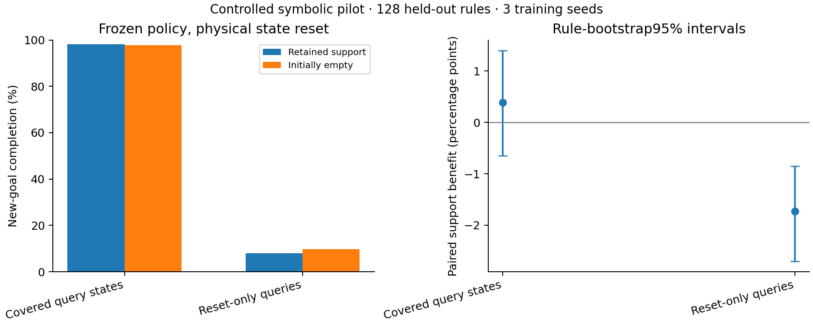
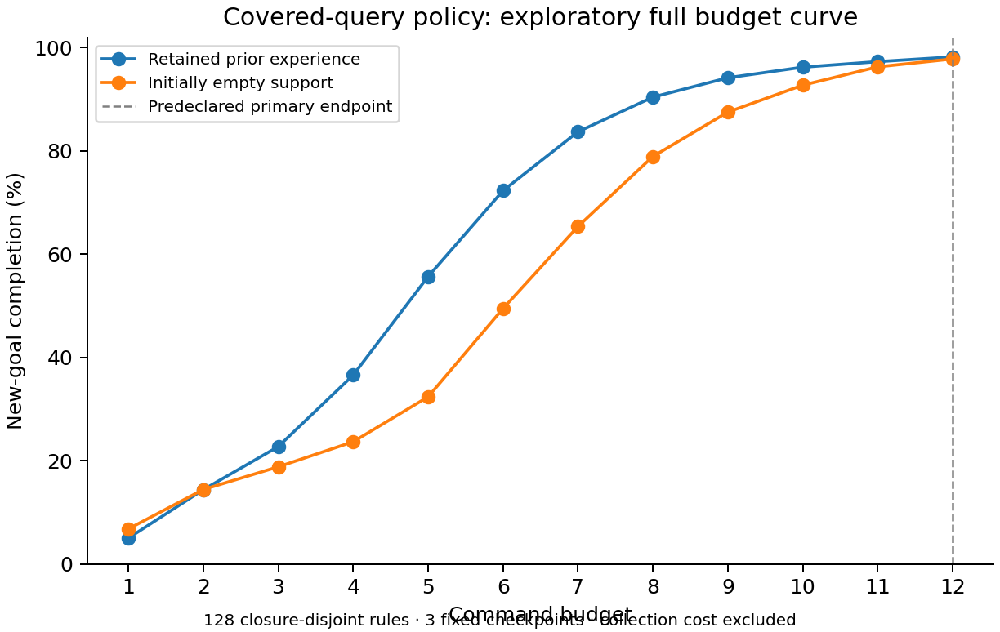

选题重审
从恢复当前任务到利用经验学习。
2026-10-13 / RESEARCH RETHINK
| 8 | 0.5 | 0.5 | |
| 4 | 0.5 | 0.82 | |
| 2 | 0.5 | 73/82 ≈ 0.890244 | |
| 2 | 0.5 | 0.5 |
2026-10-12 / ALGORITHM SEARCH

2026-10-12 / LEARNED POLICY PILOT
经验利用与闭环控制


已归档：A3 取证选择探针及历史结果
以下记录保留历史分析，不代表当前推荐主线。其模型先导已暂停推进。
一个能讲清楚的例子
只改一个机制
输入、选择、执行。
先反证，再投入
最小实验和停止条件。

程序图：侧标记未知

程序图：补看后的信息
八个离散视觉输入包 ↗ · 输入权限与限制 ↗ · 30个符号控制结果 ↗
| 对照 | 它排除什么解释 |
|---|
实际完成的工作
分析证据与待做实验分开。
深化分析与停止条件 ↗ · 144个有限条件 ↗ · 12条类型化反例 ↗
有条件的备选
直接前作
贡献要越过这些工作。
方案数据加载失败。